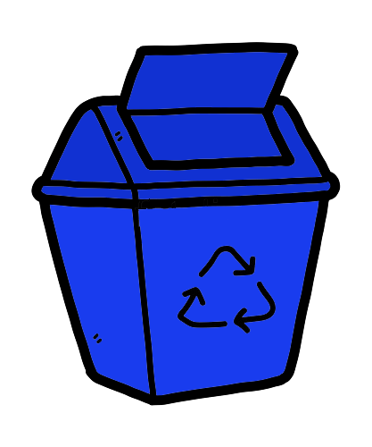
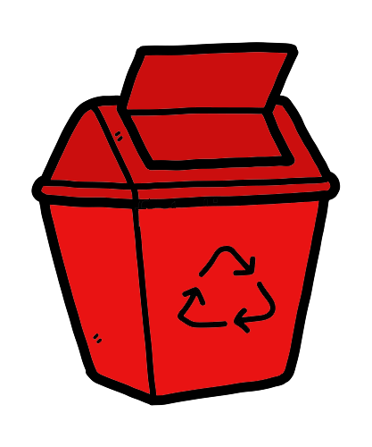
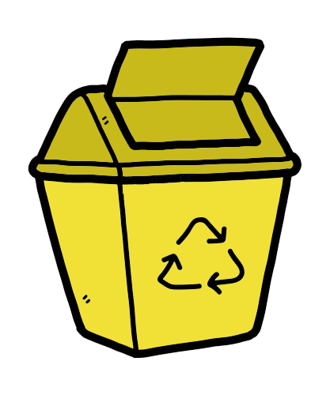
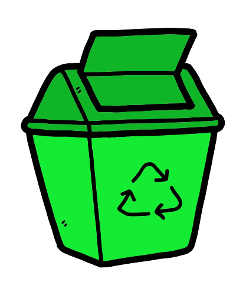
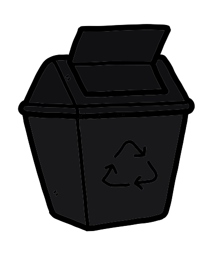
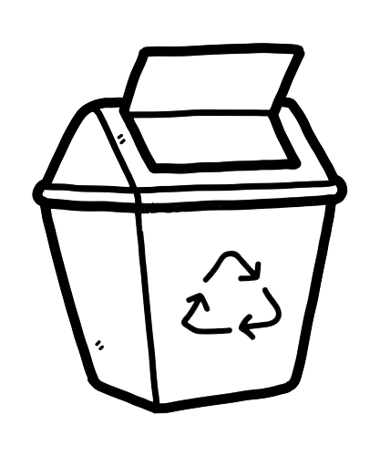
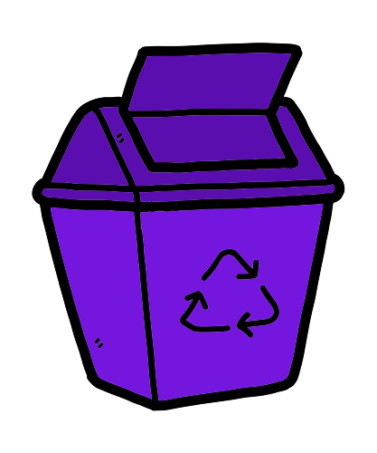
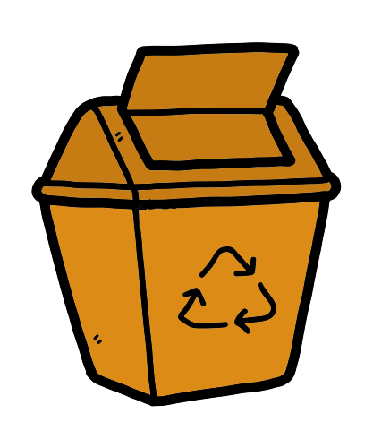
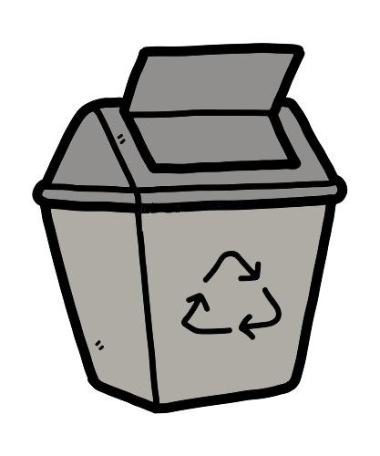
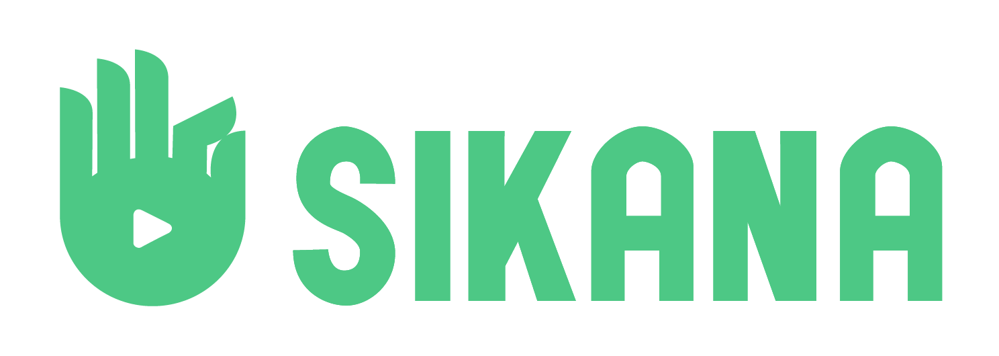

Tabela das cores das latas de lixo
Já ficou em dúvida em qual lixo jogar sua garrafa de água, ou o sua latinha de refrigerante? Se sim, é por isso que trazemos esta tabela que contém as 10 cores de lixo reciclavel. É de suma importância que todos saibam onde devem jogar seu lixo.
| Lata de lixo | Cor | O que pode jogar | Exemplos |
|---|---|---|---|
|  | Azul | Papéis em geral, incluso papelão. | Folhas usadas, jornais, revistas, cartolinas, envelopes, rascunhos, caixa de pizza |
|  | Vermelho | Plásticos | copos, garrafas, sacos/sacolas, frascos de produtos, embalagens Pet (Refrigerantes, óleo, ...), canos de PVC |
|  | Amarelo | Metais | Tampinhsas de garrafas, latas, panelas sem cabo (pois o cabo possui plástico), arames, chapas, canos, pregos, cobre, papel alumínio limpo |
|  | Verde | Vidros | Garrafas, copos, potes de conserva, cacos dos objetos citados |
| Marrom | Resíduos orgânicos | Restos de comida | |
|  | Preto | Madeiras | Madeiras que não podem mais ser reutilizadas |
|  | Branco | Resíduos Ambulatórios ou de serviço de saúde | Agulhas usadas, curativos, remédios, etc. |
|  | Roxo | Resíduos radioativos | Resíduos radiativos, mais utilizado em indústrias e hospitais |
|  | Laranja | Resíduos perigosos | Baterias, pilhas, lâmpadas, etc. |
|  | Cinza | Materiais não recicláveis ou recicláveis que estejam contaminados | Cerâmica, porcelana, isopor, etc. |
Conheça as ONGS ambientais
Greenpeace
WWF (World Wide Fund for Nature)
Sikana
Water
IPE (Instituto de Pesquisas Ecológicas)
SOS Amazônia
ISA (Instituto Sócio ambiental)
Sea Shepherd